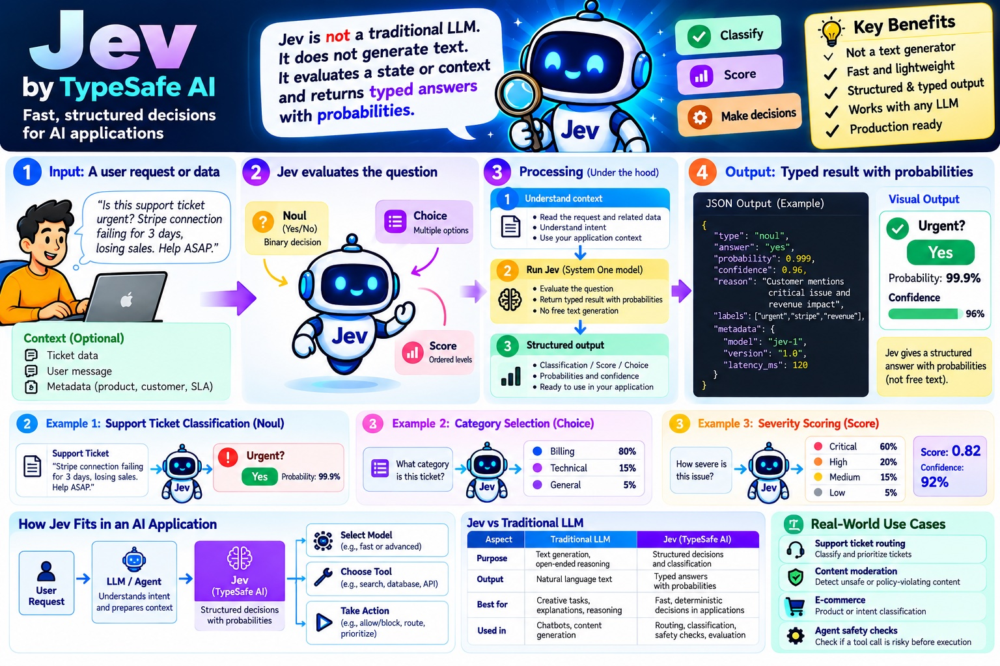

TypeSafe AI · Jev · CMS support desk demo
Jev doesn't write text. You send it some state and a set of typed questions, and it sends back probabilities. Your own code compares those numbers to thresholds and picks the action. Pick a sample on the left and follow the three steps.
This page uses the repo's offline mock (src/mock.js): keyword rules that return answers in Jev's exact response shape. Real Jev reads meaning, so judge accuracy with a live key and npm run demo. The decision rules and thresholds are the real ones from src/triage.js, src/gate.js and src/questions.js.

One POST to api.typesafe.ai/v1/systemone with the state and every question.
One typed answer per question. The black tick on a bar is the threshold your code checks.
Rules run top to bottom. The first one that fires wins.